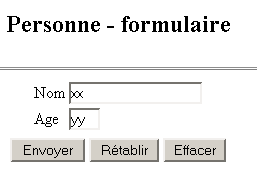
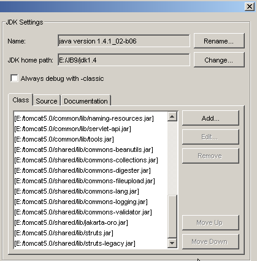
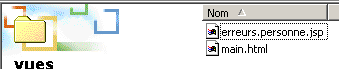
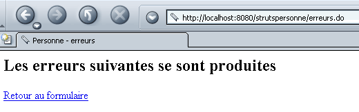
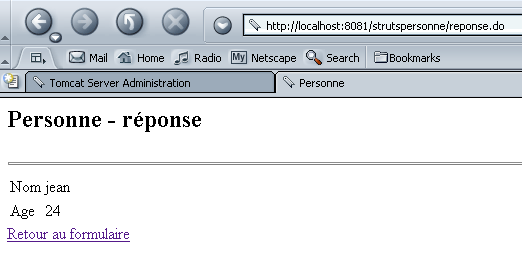
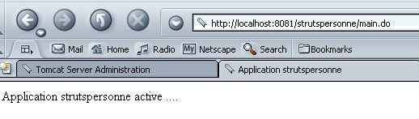

2. تطبيق strutspersonne
لقد تعاملنا مع تطبيق «person» بالطريقة التقليدية، باستخدام السيرفلت وصفحات JSP. ونقترح الآن تقديم Struts باستخدام هذا التطبيق نفسه.
2.1. كيفية عمل التطبيق
دعونا نستعرض هنا كيفية عمل تطبيق «person» الذي قمنا بتطويره. يتكون التطبيق من:
- من سيرفلت رئيسي. وهو الذي يتولى تنفيذ جميع العمليات المنطقية للتطبيق.
- ثلاث صفحات JSP: formulaire.personne.jsp، reponse.personne.jsp، erreurs.personne.jsp
وتعمل التطبيق على النحو التالي. يمكن الوصول إليه عبر الرابط http://localhost:8080/personne/main. وعند هذا الرابط، يظهر نموذج مقدم من الصفحة formulaire.personne.jsp:

يقوم المستخدم بملء النموذج والضغط على الزر [Envoyer] من نوع «إرسال». أما الزر [Rétablir] فهو من نوع «إعادة الضبط»، c.a.d، حيث يعيد المستند إلى الحالة التي تم استلامه بها. الزر [Effacer] هو زر من النوع button. يجب على المستخدم إدخال اسم وعمر صحيحين. إذا لم يكن الأمر كذلك، يتم إرسال صفحة أخطاء إليه عبر الصفحة JSP erreurs.personne.jsp. فيما يلي بعض الأمثلة:
التبادل رقم 1
 |  |
إذا اتبعنا الرابط [Retour au formulaire]، فسنجده في الحالة التي تركناه عليها:
المراسلة رقم 2
 |  |
إذا أرسل المستخدم بيانات صحيحة، فإن التطبيق يرسل له ردًا عبر الصفحة JSP reponse.personne.jsp.
التبادل رقم 1
 |  |
إذا اتبعنا الرابط [Retour au formulaire]، فسنجده في الحالة التي تركناه عليها:
المراسلة رقم 2
 |  |
2.2. بنية Struts للتطبيق
سنعتمد بنية Struts التالية:
 |
- ستكون هناك ثلاث طرق عرض
- وسيكون وحدة التحكم هي تلك التي توفرها Struts
- FormulaireBean هي الفئة المسؤولة عن تخزين قيم النموذج المعروض في العرض formulaire.personne.jsp
- FormulaireAction هي الفئة المسؤولة عن معالجة قيم FormulaireBean وتحديد صفحة الرد المطلوب إرسالها:
- الطريقة erreurs.personne.jsp إذا كانت بيانات النموذج خاطئة
- عرض reponse.personne.jsp في الحالات الأخرى
بالنسبة للمطور، تتمثل المهمة في كتابة الكود:
- للطرق الثلاثة
- للفئة FormulaireBean المرتبطة بالنموذج
- لفئة FormulaireAction المسؤولة عن معالجة النموذج
2.3. تجميع الفئات اللازمة لتطبيق Struts
لتجميع الفئات اللازمة لتطبيقنا، سنستخدم Jbuilder. يعمل هذا البرنامج مع ملف JDK الذي لا يحتوي على الفئات اللازمة لتطبيقات Struts. يمكننا تهيئة Jbuilder بالطريقة التالية:
- الخيار «Tools» (الأدوات) / «Configure JDKs» (تكوين JDK)

- استخدم الزر [Add/Ajouter] لإضافة ملفات .jar التي يوفرها Struts إلى أرشيفات فئات JBuilder. إذا تم فك ضغط أرشيف Struts على القرص، فيمكن إضافة جميع ملفات .jar الموجودة في المجلد <struts>/lib إلى Jbuilder:

يمكن إضافة جميع ملفات .jar المذكورة أعلاه إلى أرشيفات Jbuilder. لقد رأينا سابقًا أن Tomcat يحتاج أيضًا إلى الوصول إلى أرشيفات Struts. بالنسبة لـ Tomcat 4.x، يمكن وضع ملفات .jar الخاصة بـ Struts في <tomcat4>\common\lib. أما بالنسبة لـ Tomcat 5.x، فيمكن وضعها في <tomcat5>\shared\lib. يمكننا بعد ذلك تحديد أن يبحث JBuilder عن ملفات .jar الخاصة بـ Struts في نفس المكان الذي يبحث فيه Tomcat. وهذا ما تم فعله في لقطة الشاشة التي تظهر ملفات .jar الخاصة بـ JBuilder أعلاه. فقد تم أخذها من <tomcat5>\shared\lib.
لذا، إذا أشار Jbuilder أثناء ترجمة فئة ما إلى أنه لا يجد فئة Struts، فتحقق من أمرين:
- تهجئة اسم الفئة
- ملفات .jar التي يستخدمها Jbuilder. يجب أن تكون جميع ملفات .jar الخاصة بـ Struts موجودة ضمنها.
2.4. طرق عرض تطبيق strutspersonne
الطرق الثلاثة للتطبيق هي التالية:
- formulaire.personne.jsp: تعرض نموذج إدخال الاسم والعمر لشخص ما
- reponse.personne.jsp: تعرض القيم التي تم إدخالها إذا كانت صالحة
- erreurs.personne.jsp: تعرض الأخطاء إن وجدت
2.4.1. الطريقة erreurs.personne.jsp
سيتم تعريف هذا العرض الذي يعرض قائمة بالأخطاء على النحو التالي:
<%@ taglib uri="/WEB-INF/struts-html.tld" prefix="html" %>
<html>
<head>
<title>Personne</title>
</head>
<body>
<h2>Les erreurs suivantes se sont produites</h2>
<html:errors/>
<html:link page="/formulaire.do">
Retour au formulaire
</html:link>
</body>
</html>
هناك ميزتان جديدتان في هذا الكود:
- وجود علامات <html:XX/> التي تختلف عن علامات HTML. يمكن بالفعل إنشاء مكتبات لعلامات JSP التي يتم تحويلها إلى كود Java عند تحويل الصفحة JSP إلى سيرفلت.
- يجب أن تعلن الصفحة JSP عن مكتبات العلامات التي تستخدمها. وهي تفعل ذلك هنا بالسطر
يقدم هذا السطر معلومتين:
- uri: موقع الملف الذي ينظم قواعد استخدام المكتبة. يتم توفير الملف struts-html.tld ضمن حزمة توزيع Struts. وفي المثال أعلاه، سيتم وضعه في المجلد WEB-INF.
- prefix: المعرف المستخدم في الكود لإضافة بادئة إلى علامات المكتبة. وهذا يتيح تجنب تعارضات الأسماء التي قد تنشأ عند استخدام عدة مكتبات علامات في آن واحد. فمن الممكن وجود علامتين تحملان الاسم نفسه في مكتبتين مختلفتين. ومن خلال إعطاء بادئة مختلفة لكل مكتبة، يتم إزالة أي غموض.
- تعرض العلامة <html:errors> قائمة الأخطاء التي يرسلها إليها وحدة التحكم Struts.
- تقوم العلامة <html:link> بإنشاء رابط يشير إلى /C/page حيث
- حيث C هو سياق التطبيق
- page هي القيمة URL المحددة في سمة page للعلامة
العلامة
العلامة ستولد الكود HTML التالي:
حيث C هو سياق التطبيق
2.4.2. اختبار العرض erreurs.personne.jsp
- يتم وضع الملف erreurs.personne.jsp في مجلد «vues» الخاص بتطبيق strutspersonne:

- يتم أخذ الملف struts-html.tld من توزيع Struts (<struts>/lib) ووضعه في WEB-INF:

- يتم تعديل الملف struts-config.xml على النحو التالي:
<?xml version="1.0" encoding="ISO-8859-1" ?>
<!DOCTYPE struts-config PUBLIC
"-//Apache Software Foundation//DTD Struts Configuration 1.1//EN"
"http://jakarta.apache.org/struts/dtds/struts-config_1_1.dtd">
<struts-config>
<action-mappings>
<action
path="/main"
parameter="/vues/main.html"
type="org.apache.struts.actions.ForwardAction"
/>
<action
path="/erreurs"
parameter="/vues/erreurs.personne.jsp"
type="org.apache.struts.actions.ForwardAction"
/>
</action-mappings>
</struts-config>
نقوم بإنشاء ملف تكوين جديد باسم URL /erreurs في ملف التكوين ليتم معالجته بواسطة وحدة التحكم Struts. سيتم إعادة توجيه URL /erreurs.do إلى العرض /vues/erreurs.personne.jsp. يتم وضع الملف struts-config.xml في المجلد WEB-INF.
- نقوم بإعادة تشغيل Tomcat حتى يتم أخذ الملف الجديد struts-config.xml في الاعتبار، ثم نطلب عنوان URL http://localhost:8080/strutspersonne/erreurs.do:

لم تنتج العلامة <html:errors/> أي شيء. وهذا أمر طبيعي، حيث إن الإجراء ForwardAction لم يُنشئ قائمة الأخطاء التي تتوقعها العلامة. ومع ذلك، تُظهر الاستجابة أعلاه أن عرضنا JSP صحيح من الناحية النحوية على الأقل، وإلا لكنا حصلنا على صفحة أخطاء. دعونا نتحقق من الكود HTML الذي تلقّاه المتصفح (عرض/المصدر):
<html>
<head>
<title>Personne - erreurs</title>
</head>
<body>
<h2>Les erreurs suivantes se sont produites</h2>
<a href="/strutspersonne/formulaire.do">Retour au formulaire</a>
</body>
</html>
تجدر الإشارة إلى الرابط الذي تم إنشاؤه بواسطة العلامة <html:link>. تم تضمين السياق /strutspersonne تلقائيًا في الرابط. وهذا يسمح بنقل التطبيق من سياق إلى آخر (تغيير الجهاز على سبيل المثال) دون الحاجة إلى تغيير الروابط التي تم إنشاؤها بواسطة <html:link>.
2.4.3. الطريقة reponse.personne.jsp
هذه العرض الذي يؤكد القيم التي تم إدخالها في النموذج هو التالي:
<%@ taglib uri="/WEB-INF/struts-html.tld" prefix="html" %>
<%
// نسترد البيانات «الاسم» و«العمر»
//String الاسم=(String)request.getAttribute("الاسم");
String nom="jean";
//String age=(String)request.getAttribute("age");
String age="24";
%>
<html>
<head>
<title>Personne</title>
</head>
<body>
<h2>Personne - réponse</h2>
<hr>
<table>
<tr>
<td>Nom</td>
<td><%= nom %>
</tr>
<tr>
<td>Age</td>
<td><%= age %>
</tr>
</table>
<br>
<html:link page="/formulaire.do">
Retour au formulaire
</html:link>
</body>
</html>
تعرض الصفحة معلومتين هما [nom] و [age]، اللتين سيتم تمريرهما إليها من وحدة التحكم في الكائن المحدد مسبقًا request. هنا، نجري اختبارًا لن تتاح فيه للوحدة التحكمية فرصة تحديد قيم [nom] و [age]. ولذلك، نقوم بتهيئة هاتين المعلومتين بقيم عشوائية. علاوة على ذلك، يتم هنا أيضًا إنشاء رابط العودة إلى النموذج بواسطة علامة <html:link>.
2.4.4. اختبار العرض reponse.personne.jsp
- يتم وضع الملف reponse.personne.jsp في مجلد «vues» الخاص بتطبيق strutspersonne:

- تم تعديل الملف struts-config.xml على النحو التالي:
<?xml version="1.0" encoding="ISO-8859-1" ?>
<!DOCTYPE struts-config PUBLIC
"-//Apache Software Foundation//DTD Struts Configuration 1.1//EN"
"http://jakarta.apache.org/struts/dtds/struts-config_1_1.dtd">
<struts-config>
<action-mappings>
<action
path="/main"
parameter="/vues/main.html"
type="org.apache.struts.actions.ForwardAction"
/>
<action
path="/erreurs"
parameter="/vues/erreurs.personne.jsp"
type="org.apache.struts.actions.ForwardAction"
/>
<action
path="/reponse"
parameter="/vues/reponse.personne.jsp"
type="org.apache.struts.actions.ForwardAction"
/>
</action-mappings>
</struts-config>
نقوم بإنشاء استجابة جديدة في ملف التكوين باسم URL /reponse ليتم معالجتها بواسطة وحدة التحكم Struts. سيتم إعادة توجيه /URL /reponse.do إلى العرض /vues/reponse.personne.jsp. يتم وضع الملف struts-config.xml في المجلد WEB-INF.
- نقوم بإعادة تشغيل Tomcat حتى يتم أخذ الملف الجديد struts-config.xml في الاعتبار، ثم نطلب عنوان URL http://localhost:8080/strutspersonne/erreurs.do:

ونحصل بالفعل على النتيجة المتوقعة.
2.4.5. الصفحة formulaire.personne.jsp
يعرض هذا العرض نموذج إدخال اسم المستخدم وعمره. ورمزها JSP هو كما يلي:
<%@ taglib uri="/WEB-INF/struts-html.tld" prefix="html" %>
<html>
<meta http-equiv="pragma" content="no-cache">
<head>
<title>Personne - formulaire</title>
<script language="javascript">
function effacer(){
with(document.frmPersonne){
nom.value="";
age.value="";
}
}
</script>
</head>
<body>
<center>
<h2>Personne - formulaire</h2>
<hr>
<html:form action="/main" name="frmPersonne" type="istia.st.struts.personne.FormulaireBean">
<table>
<tr>
<td>Nom</td>
<td><html:text property="nom" size="20"/></td>
</tr>
<tr>
<td>Age</td>
<td><html:text property="age" size="3"/></td>
</tr>
<tr>
</table>
<table>
<tr>
<td><html:submit value="Envoyer"/></td>
<td><html:reset value="Rétablir"/></td>
<td><html:button property="btnEffacer" value="Effacer" onclick="effacer()"/></td>
</tr>
</table>
</html:form>
</center>
</body>
</html>
نجد مكتبة العلامات struts-html.tld المستخدمة في عرض الأخطاء. تظهر علامات جديدة:
تُستخدم في الوقت نفسه لتوليد العلامة HTML <form> ولتقديم معلومات إلى وحدة التحكم التي ستتولى معالجة هذا النموذج:
يُلاحظ أن طريقة إرسال معلمات النموذج (GET/POST) إلى وحدة التحكم غير محددة. يمكن القيام بذلك باستخدام السمة method. وفي حالة عدم وجودها، يتم استخدام الطريقة POST بشكل افتراضي. | |||||||
تُستخدم لإنشاء العلامة <input type="text" value="...">:
| |||||||
يُستخدم لإنشاء العلامة HTML <input type="submit"...> | |||||||
يُستخدم لإنشاء العلامة HTML <input type="reset"...> | |||||||
يُستخدم لإنشاء العلامة HTML <input type="button"...> |
2.4.6. الـ bean المرتبط بالنموذج formulaire.personne.jsp
- في Struts، يجب أن يرتبط كل نموذج بـ«بيان» (bean) مسؤول عن حفظ قيم النموذج والاحتفاظ بها في الجلسة الحالية. «البيان» هو فئة Java يجب أن تتبع صيغة معينة. يجب أن يكون «البيان» المرتبط بالنموذج مشتقًا من الفئة ActionForm المُعرَّفة في مكتبات Struts:
- يجب أن تتطابق أسماء سمات «البيان» مع حقول النموذج (سمات property لعلامات html:text في النموذج). وبناءً على كود النموذج السابق، يجب أن يحتوي «البيان» على حقلين يُسميان «الاسم» و«العمر».
- لكل حقل XX في النموذج، يجب أن يحدد «البيان» طريقتين:
- public void setXX(Type valeur): لتعيين قيمة للسمة XX
- Type getXX(): للحصول على قيمة الحقل XX
قد يكون «البيان» المرتبط بالنموذج السابق كما يلي:
package istia.st.struts.personne;
import org.apache.struts.action.ActionForm;
public class FormulaireBean extends ActionForm {
// الاسم
private String nom = null;
public String getNom() {
return nom;
}
public void setNom(String nom) {
this.nom = nom;
}
// العمر
private String age = null;
public String getAge() {
return age;
}
public void setAge(String age) {
this.age = age;
}
}
سيتم ترجمة هذه الفئة باستخدام JBuilder.
2.4.7. اختبار عرض formulaire.personne.jsp
يتم وضع الملف formulaire.personne.jsp في مجلد «vues» الخاص بتطبيق strutspersonne:

- تم تعديل الملف struts-config.xml على النحو التالي:
<?xml version="1.0" encoding="ISO-8859-1" ?>
<!DOCTYPE struts-config PUBLIC
"-//Apache Software Foundation//DTD Struts Configuration 1.1//EN"
"http://jakarta.apache.org/struts/dtds/struts-config_1_1.dtd">
<struts-config>
<action-mappings>
<action
path="/main"
parameter="/vues/main.html"
type="org.apache.struts.actions.ForwardAction"
/>
<action
path="/erreurs"
parameter="/vues/erreurs.personne.jsp"
type="org.apache.struts.actions.ForwardAction"
/>
<action
path="/reponse"
parameter="/vues/reponse.personne.jsp"
type="org.apache.struts.actions.ForwardAction"
/>
<action
path="/formulaire"
parameter="/vues/formulaire.personne.jsp"
type="org.apache.struts.actions.ForwardAction"
/>
</action-mappings>
</struts-config>
نقوم بإنشاء نموذج جديد في ملف التكوين URL /formulaire ليتم معالجته بواسطة وحدة التحكم Struts. سيتم إعادة توجيه URL /formulaire.do إلى العرض /vues/formulaire.personne.jsp. يتم وضع الملف struts-config.xml في المجلد WEB-INF.
- نضع الفئة FormulaireBean في WEB-INF/classes:

- نقوم بإعادة تشغيل Tomcat حتى يتم أخذ الملف الجديد struts-config.xml في الاعتبار، ثم نطلب عنوان URL http://localhost:8080/strutspersonne/formulaire.do:

نحصل على النموذج بالفعل. قد يثير فضولنا أن نلقي نظرة على كيفية «ترجمة» العلامات <html:XX> التي كانت منتشرة في كود النموذج JSP:
<html>
<meta http-equiv="pragma" content="no-cache">
<head>
<title>Personne - formulaire</title>
<script language="javascript">
function effacer(){
with(document.frmPersonne){
nom.value="";
age.value="";
}
}
</script>
</head>
<body>
<center>
<h2>Personne - formulaire</h2>
<hr>
<form name="frmPersonne" method="post" action="/strutspersonne/main.do">
<table>
<tr>
<td>Nom</td>
<td><input type="text" name="nom" size="20" value=""></td>
</tr>
<tr>
<td>Age</td>
<td><input type="text" name="age" size="3" value=""></td>
</tr>
<tr>
</table>
<table>
<tr>
<td><input type="submit" value="Envoyer"></td>
<td><input type="reset" value="Rétablir"></td>
<td><input type="button" name="btnEffacer" value="Effacer" onclick="effacer()"></td>
</tr>
</table>
</form>
</center>
</body>
</html>
في النموذج الناتج، تعمل الأزرار |إعادة التعيين] و [Effacer]. الزر [Envoyer] من نوع الإرسال (submit) يعيد التوجيه إلى URL /strutspersonne/main.do. وفقًا لملف web.xml الخاص بالتطبيق، سيتولى وحدة التحكم Struts معالجته. ووفقًا لملف struts-config.html، يجب على وحدة التحكم إعادة توجيه الطلب إلى العرض /vues/main.html. لنجرب ذلك:

كل شيء يسير كما هو متوقع. يبقى لنا الآن معالجة قيم النموذج فعليًا، c.a.d. نكتب فئة من نوع Action ستستقبل بيانات النموذج في كائن FormulaireBean.